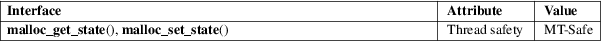

malloc_get_state, malloc_set_state − record and restore state of malloc implementation
Standard C library (libc, −lc)
#include <malloc.h>
void
*malloc_get_state(void);
int malloc_set_state(void *state);
Note: these function are removed in glibc 2.25.
The malloc_get_state() function records the current state of all malloc(3) internal bookkeeping variables (but not the actual contents of the heap or the state of malloc_hook(3) functions pointers). The state is recorded in a system-dependent opaque data structure dynamically allocated via malloc(3), and a pointer to that data structure is returned as the function result. (It is the caller’s responsibility to free(3) this memory.)
The malloc_set_state() function restores the state of all malloc(3) internal bookkeeping variables to the values recorded in the opaque data structure pointed to by state.
On success, malloc_get_state() returns a pointer to a newly allocated opaque data structure. On error (for example, memory could not be allocated for the data structure), malloc_get_state() returns NULL.
On success, malloc_set_state() returns 0. If the implementation detects that state does not point to a correctly formed data structure, malloc_set_state() returns −1. If the implementation detects that the version of the data structure referred to by state is a more recent version than this implementation knows about, malloc_set_state() returns −2.
For an explanation of the terms used in this section, see attributes(7).

GNU.
These functions are useful when using this malloc(3) implementation as part of a shared library, and the heap contents are saved/restored via some other method. This technique is used by GNU Emacs to implement its "dumping" function.
Hook function pointers are never saved or restored by these functions, with two exceptions: if malloc checking (see mallopt(3)) was in use when malloc_get_state() was called, then malloc_set_state() resets malloc checking hooks if possible; if malloc checking was not in use in the recorded state, but the caller has requested malloc checking, then the hooks are reset to 0.
malloc(3), mallopt(3)